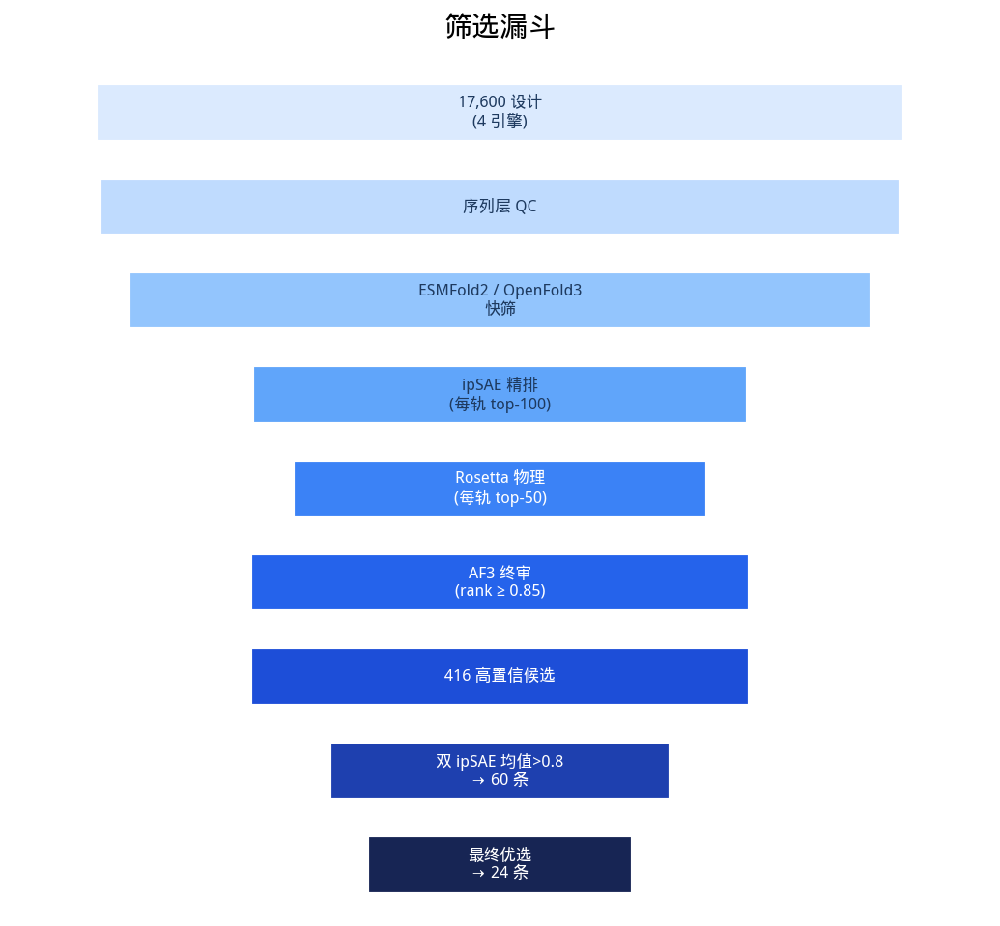
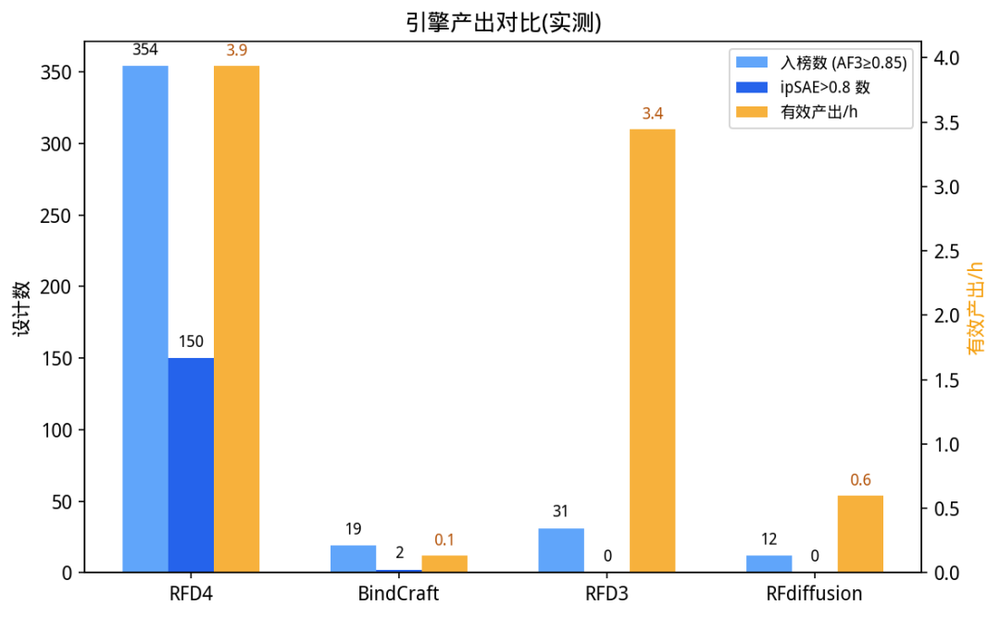
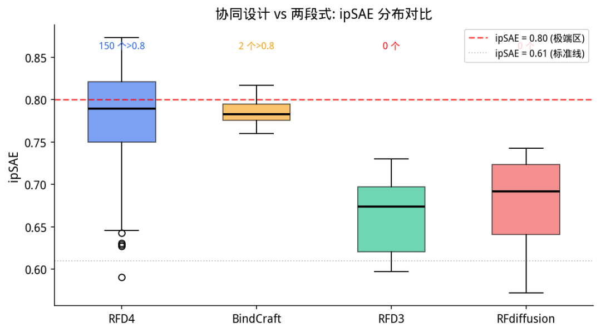
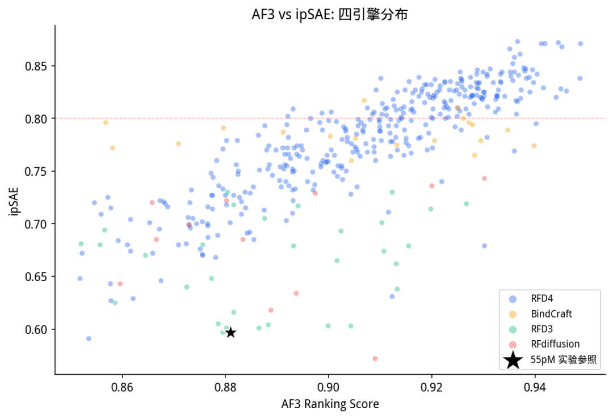
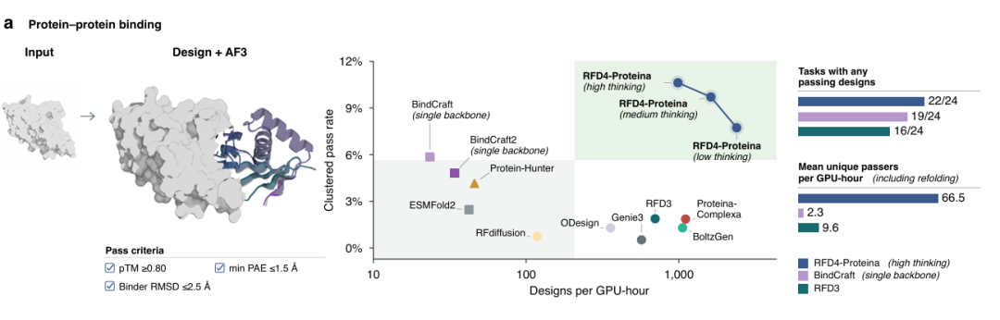

152 个 ipSAE 超过 0.8 的 TNF-α 结合剂设计，RFD4 占了 150 个。看到这组结果，我觉得 RFD4 确实值得单独聊聊。四条方法都对准同一个靶点，用了相同的热点位点，后面也经过同一套计算筛选。高分候选几乎全出自 RFD4，很难说只是图画得好看。
不过，“高分”得先说清楚。ipSAE 衡量的是结构预测模型对结合界面的把握，0.8 不是亲和力门槛。这批新设计目前还没有相应的表达和结合实验结果。下面我想讲的是 RFD4 在这轮计算设计里做对了什么，以及分数到了哪里就不能再替实验说话。
TNF-α 在炎症性疾病里是个老靶点，阿达木单抗、英夫利西单抗等药物都与它有关。药物已经有了，从头设计一个短蛋白去结合它却没那么顺。此前公开的 Rosetta RIFdock、短链 RFdiffusion，以及一组 82 至 104 aa 的 BoltzGen 设计，都遇到过实验上找不到结合的情况。这些工作采用的设置不同，我没有把它们算进这次四方法对照，只是说明为什么 TNF-α 值得拿来试。
这轮设计用的是 PDB 1TNF。RFdiffusion、RFD3、BindCraft、RFD4-Proteina 都从同一靶标结构和同一组热点位点出发，最后总共生成 17,664 个候选。
这些是本轮运行记录，四条路线的生成量相差很大。多个方法都共享了GPU，单看这张表，不能把小时数直接除一除就宣布哪个模型快多少倍。所以这个时间对比仅供参考。
生成完也没有直接按模型自己的评分排队。我们先查序列，用 ESMFold2 做快筛，再看 ipSAE 和 Rosetta 的界面指标，最后用 AlphaFold 3 复核并合并重复设计。这个过程让不同方法的候选接受相同的后续检查；它仍然是一条计算筛选流程，每层筛选都有自己的偏好。

四种生成方法不同，候选进入同一套后续计算筛选。
先看 AF3 ranking score。把 0.85 作为进入最终名单的线，RFD4 有 4.4% 的设计过线，BindCraft 是 9.5%，RFD3 和 RFdiffusion 分别为 0.6% 与 0.3%。按“每生成一条，有多少条入选”来算，BindCraft 排第一。
ipSAE 则给出另一幅图。RFD4 有 150 条超过 0.8，BindCraft 有 2 条，RFD3 和 RFdiffusion 在这批结果里都没有。最高 ipSAE 也按同样的顺序拉开，RFD4 为 0.873，BindCraft 为 0.817，RFD3 和 RFdiffusion 分别是 0.730、0.743。

BindCraft 的单条设计入选比例最高，RFD4 则产出了绝大多数高 ipSAE 候选。
我会把这两组数一起看。BindCraft 只生成了 199 条，入选比例高；RFD4 生成 8,105 条，交出的高界面分数候选多得多。项目里如果要一次拿到足够多、结构上值得往下看的设计，RFD4 这次给出的答案很有吸引力。它们都还没有变成湿实验命中率。
有个细节解释了我为什么更在意 ipSAE。四条路线各自最好的 AF3 ranking score 都在约 0.92 至 0.95，看最高分几乎分不出层次。可把界面单独拎出来，RFD4 和 BindCraft 的高分设计大致分布在 0.78 至 0.87；我们这次采用的 RFD3 和 RFdiffusion 流程大致在 0.57 至 0.74。复合物整体分数相近，预测模型对结合面的把握仍可能差不少。

这轮 TNF-α 设计中，RFD4 和 BindCraft 的界面预测分数整体更高。

AF3 总体分数接近时，结合界面的预测分数仍能把候选区分开。
我们使用的 RFdiffusion、RFD3 流程先生成蛋白骨架，再交给 ProteinMPNN 配序列。骨架生成时，后面会填进哪些氨基酸还没定下来。等侧链真正摆到结合面上，疏水口袋能否填好、极性接触是否合理，要在已有骨架的限制下解决。
RFD4 用流匹配模型把序列和结构放在一起生成。BindCraft 的路径不同，它利用 AlphaFold 2 的反馈不断调序列。两种方法都让序列选择与界面几何有更多相互调整的机会。这能解释为什么它们在本轮 ipSAE 上更占优势。
解释到这里就够了。一个靶点，加上明显不同的生成规模和计算预算，还不足以证明某一类算法在所有结合剂任务里都更好。对我更有用的判断是，设计骨架和选择侧链若隔得太远，界面会留下需要后续预测器来发现的问题。RFD4 在这次 TNF-α 任务里，至少交出了更多让预测器相信的界面。
我们的时间表记录的是实际运行这批 TNF-α 设计的耗时，暂时不适合用来计算方法之间的严格加速倍数。RFD4 论文另做了多靶标比较，在 24 个蛋白结合剂靶标上，每种方法每个靶标尝试 200 次。Figure 2 报告，高计算设置的 RFD4 每 GPU 小时生成约 986 个设计，生成速度为图中 BindCraft 对照流程的 42 倍。把统一的 AF3 复核也算进去，每 GPU 小时得到的合格结构簇是最强对照方法的 5 倍。

42 倍和 5 倍说的是两件事。前者只算生成阶段，后者连共同的 AF3 复核成本也算了。论文主图里的 BindCraft 使用简化的单骨架流程，完整流程的比较另见补充图 16。论文的 24 靶标基准测试也不能拿来替换我们这次 TNF-α 的运行记录。
RFD4 自己加大计算量时也会慢下来。论文里，蛋白结合剂设计的合格结构簇比例从低计算设置的 7.7% 升到高计算设置的 10.6%，生成速度则从每 GPU 小时 2388 个降到 986 个。项目里究竟要更多原始设计，还是要更多通过统一筛选的候选，决定了“快”该怎么算。
论文报告的 GPU 小时算得很细，落到项目里还有安装、环境配置、下载权重和批量运行。这次 RFD4 的安装与 16 批设计运行，都是用 AI agent 完成的。安装和反复启动任务少了很多手工操作，确实省时省力。省下来的是人盯着流程的时间，表里的 GPU 耗时不会因此缩短。任务跑完以后，文件是否齐全、评分用的是哪个预测器，仍要仔细核对。
权重下载这一步就遇到了问题。约 1.74 GB 的模型权重经 Hugging Face 的 Xet 机制下载后，模型目录里可能只剩指向共享缓存的链接。目录看起来只有约 52 KB，顺着链接才能找到真正的权重文件。若只按目录大小判断下载失败，很容易重复折腾。
内置的 AF3 复折也碰到三处具体问题。缓存目录没有写权限，程序会停在启动阶段；模型路径是符号链接时，容器内可能找不到真实文件；生成的 CIF 文件若把 b_factor 写成 nan，AF3 的输入处理会直接拒绝。我们后来把生成和复折拆开，先检查结构文件，再做统一评分。这些改动让流程跑通，和设计本身的优劣是两回事。
评分时还要留意预测器版本。我们这批结果里，RFD4 内置调用的 OpenFold3 给出的 ranking score 比 DeepMind 官方 AF3 整体低约 0.08。同一条设计，前者给 0.850，后者给 0.939。若把来自两个预测器的分数混在一张榜上，很可能排错候选。
环境依赖也影响过运行。BoltzGen 的子进程直接按系统路径找 python，激活 conda 环境以后仍可能找错；旧的 LD_LIBRARY_PATH 还会带来库冲突。遇到运行异常，我现在会先确认实际调用了哪个解释器、读到了哪份模型文件，再回头查设计参数。
我们把一条公开发布、实验亲和力达到 55 pM 的结合子放进同一套计算评分。它的 AF3 ranking score 是 0.881，ipSAE 只有 0.597。最终名单里约 82% 的新候选，这两项计算分数都超过了它。
这不意味着新候选比 55 pM 结合子更强。那条已验证结合子长 146 aa，结合面呈沟槽形态。ipSAE 的计算方式可能对这类尺寸和接触方式不够友好。眼下只有一个已验证结合子作对照，还不能确定低分具体由哪项因素造成。至少它提醒我，ipSAE 0.8 适合当这一轮的筛选线，不能直接写成实验结合门槛。
算分之外，界面本身也值得翻看。我们对 416 条候选做了接触位点统计，参与接触的残基比例中位数约为 25%。对于 90 至 140 aa 的结合子，大致是 25 至 35 个残基。亮氨酸占接触残基约 16%，丙氨酸和缬氨酸分别约 8% 与 7%；酸性残基约 12%，与 TNF-α 表面的 R32、K90、K128 等碱性位点在电性上有互补可能。丝氨酸和苏氨酸合计约 18%。
这些组成能提示我们去检查疏水接触、极性相互作用，也提醒我们看非结合面有没有暴露的疏水残基。它们本身证明不了界面正确。若将来界面位点突变后结合下降，才有新的实验依据；非结合面的变化若影响表达或聚集，也需要和结合变化分开看。
前 20 条高 ipSAE 设计的两两序列一致性中位数约为 7%，说明它们的序列差异很大。要判断这些候选是否真走出了不同骨架，还需要做结构聚类。序列变得不一样，结合姿势未必跟着变。
RFD4 这次给我的印象很明确。它能在 TNF-α 上持续产出界面评分高的设计，数量优势也足够明显。下一步我最想看的，是从不同分数段和不同结构类别里挑出候选做实验。等表达、结合、聚集和特异性的数据回来，才知道这 150 条高分设计里有多少真正值得留下。